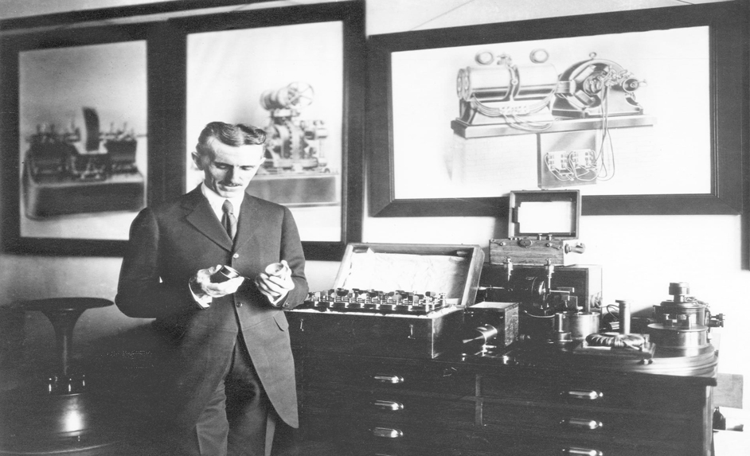

Nikola Tesla
The Genius Who Lit The World

Tesla reading in front of a spiral coil of his high-voltage transformer
Here's a time line of Nikola Tesla's life:
• 1856: Born in modern day Croatia on July 10.
• 1861: Nikola's older and only brother Dane, dies after falling from a horse. Some accounts indicate Tesla caused the accident by scaring the horse. Tesla Begins Education and attends the Krajina "Lower" or "Primary" School in Smiljan, in which he learned German, arithmetic and religious knowledge.
• 1870: Tesla moves to Karlovac (Carlstadt), Croatia and stays with his aunt and Col. "Old War-Horse" Branković. He attends "Higher Real Gymnasium" where teacher Martin Sekulić teaches him math and physics and has a decisive influence on him. Tesla graduates Gimnazije Karlovac a year early.
• 1873: Tesla returns to Gospić in spite of his father's instructions otherwise. Shortly after arriving he contracts Cholera. He is bedridden for 9 months and was near death many times. Tesla's father, in a moment of desperation, agreed to send him to an engineering school if he recovered from the illness.
• 1874: Tesla went to Tomingaj near Gračac to recover from Cholera and avoid the Army, from which he was a fugitive, due to required a compulsory three-years' service. Tesla later stated, "For most of this term I roamed in the mountains, loaded with a hunter's outfit and a bundle of books, and this contact with nature made me stronger in body as well as in mind."
• 1875: Tesla enrolled at the Austrian Polytechnic School in Graz on a Military Border scholarship. In his first year, Tesla never missed a lecture, made the highest grades possible and started a Serbian culture club. During his second year, Tesla came into conflict with Professor Poeschl over the Gramme dynamo when he suggested that commutators weren't necessary. At the end of the second year, Tesla lost his scholarship and took up gambling. Near the end of the third year, Tesla stopped attending lectures and dropped out the following year.
• 1878: It is unclear why, but upon leaving Austria, Tesla choose Maribor, Slovenia as his next stop. He took his first job as a draftsman for a local engineering firm. Tesla spent his spare time in a pub called Happy Peasant where he played chess and cards. In March of the following year, Tesla's father came to Maribor and pleaded with him to return home, but Tesla refused.
• 1879: This was a very eventful year for Nikola. Tesla was reported to Maribor police because he did not have a residence permit. Administrative proceedings were started immediately and Tesla was returned to Gospić under police guard.
• 1881: Tesla's Uncle Pavle arranges for Tesla to work for Ferenc Puskas at the Budapest Telephone Exchange in Hungary, which was then under construction. When Tesla arrived, he found that the new business was not anywhere near operational and instead worked as a draftsman in the Central Telegraph Office. Within a few months, the Budapest Telephone Exchange became operational and Tesla was assigned the position of Chief Electrician. During his employment, Tesla made numerous improvements to the equipment and developed an amplifier device.
• 1882: Tesla, obsessed with solving the riddle of A.C., suffers a mental breakdown and isn't expected to live. A short time later, Tesla begins to recover and during a walk in the Varosliget city park of Budapest with friend Anthony Szigety, the solution comes to Tesla in a vision. In his recollection of the event, Tesla states that he looked at the setting sun and began to recite a passage from Goethe's Faust. At that very moment the idea came to him in a flash and he drew a diagram of the motor in the sand with a stick.
• 1898: Tesla publically demonstrates his "automaton" technology by wirelessly controlling a model boat at the Electrical Exposition held at Madison Square Garden in New York City during the height of the Spanish-American War.
• 1900: A few years earlier, Tesla was issued a patent for a corona discharge ozone generator using charged metal plates to act on ambient air. He formed the Tesla Ozone Company and went into production of these units. His customers were naturopaths and allopaths who welcomed this powerful therapy into their practices. Breathing of ozone bubbled through olive oil and other oils was widely practiced at this time, and the Sears catalog of 1904 offered a unit for this purpose using eucalyptus, pine and spearmint oils. Tesla produced a gel made by bubbling ozone through olive oil until it solidified, and sold it to doctors.
• 1934: A settlement was reached with the Westinghouse Corporation that provided Tesla with a consulting rate of $125.00 per month along with the agreement to pay his monthly rent expenses. Upon signing the agreement, Tesla promptly moved to the Hotel New Yorker where he'd live rent free for the rest of his days. The debt owed to Hotel Governor Clinton was never paid.
• 1942: In his diaries "A King's Heritage," the young Peter II writes: "I visited Dr. Nikola Tesla, in his apartment in the Hotel New Yorker. After I had greeted him, the aged scientist said, 'It is my greatest honor. I am glad you are in your youth, and I am content that you will be a great ruler. I believe I will live until you come back to a free Yugoslavia. From your father you have received his last words: "Guard Yugoslavia." I am proud to be a Serbian and a Yugoslav. Our people cannot perish. Preserve the unity of all Yugoslavs - the Serbs, the Croats, and Slovenes.'"
• 1943: Tesla died quietly and alone in room #3327 on the 33rd floor of the Hotel New Yorker in New York City. The coroner would later estimate the time of death at 22:30 EST. Tesla was 86 years old.
Tesla had placed a "do not disturb" sign on his door on January 5th, 1943. Ignoring the sign, maid Alice Monaghan entered the room to find Tesla dead in his bed. Assistant Medical Examiner H. W. Wembly was called to the scene and after examination of the body, gave his opinion that the cause of death had been coronary thrombosis and that there had been no suspicious circumstances. Tesla's body was taken to the Frank E. Campbell Funeral Home at Madison Ave. and 81st St. A sculptor was commissioned by Hugo Gernsback, a long-time friend and supporter of Tesla, to create a death mask which is now displayed in the Nikola Tesla Museum.
"When asked how it felt to be the smartest man alive, Albert Einstein replied I don't know, you'll have to ask Nikola Tesla."Albert Einstein
If you have time, you should read more about this incredible human being on his Wikipedia entry.